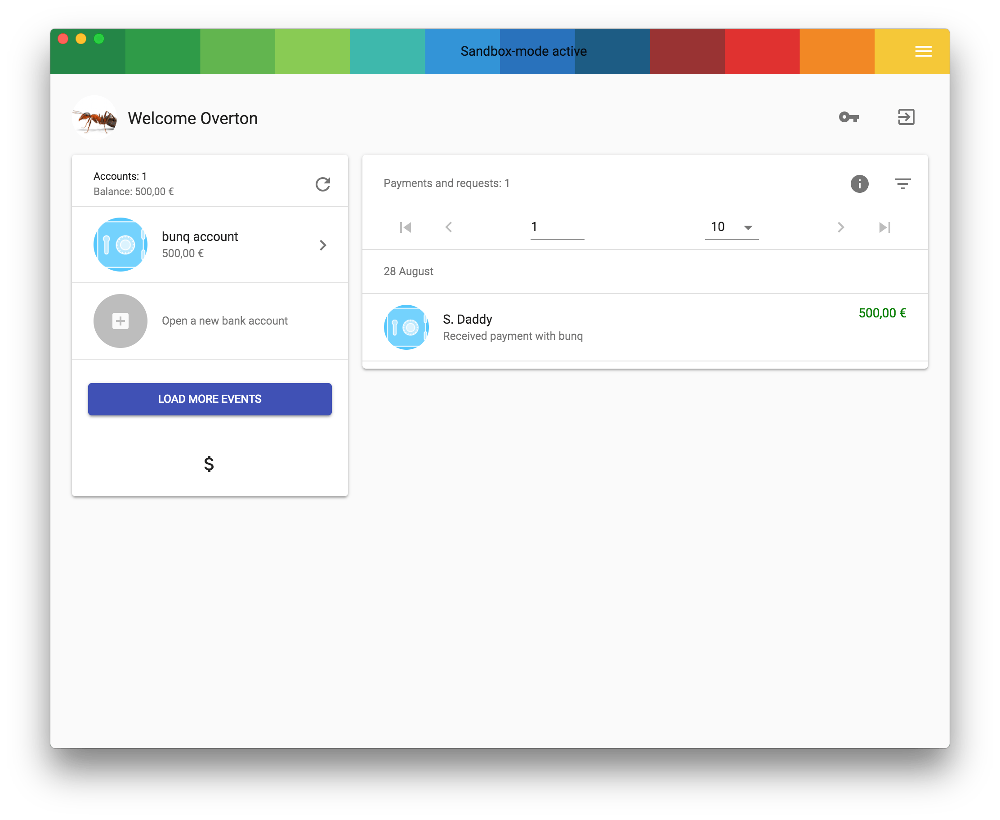

Sandbox account explained
The sandbox mode is a playground that uses the sandbox function from the bunq API. This mode is great if you want to test out the bunqDesktop app and take a look for yourself instead of looking at screenshots. But please keep in mind there are limitations some of them are the following:
In the sandbox mode you can:
- create monetary accounts
- request money
- make payments between your sandbox monetary accounts
- setup scheduled payments between your sandbox monetary accounts
In the sandbox mode you can't:
- send real money
- manage any cards
- see statistics (because there are no simulated payments)
